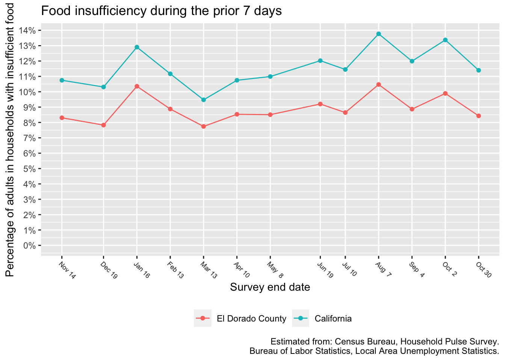

Food insecurity

In the most recent survey period that ended June 9, an estimated 8.5% of El Dorado County adults, or approximately 13,100 adults, lived in households with food insecurity.
These food insecurity estimates are based upon a model. The model uses the food insecurity rate for the entire state and the county unemployment rates to estimate food insecurity for each county. State-level food insecurity data is released every week, and county-level unemployment data is release every month. For months where unemployment data is not yet available, the model uses the latest month for which data is available. We will revise the county-level food insecurity estimates for such months in later reports as new unemployment data becomes available.
Unemployment

The data for the most recent month is typically “preliminary” and subject to revision when the following month’s data is released.